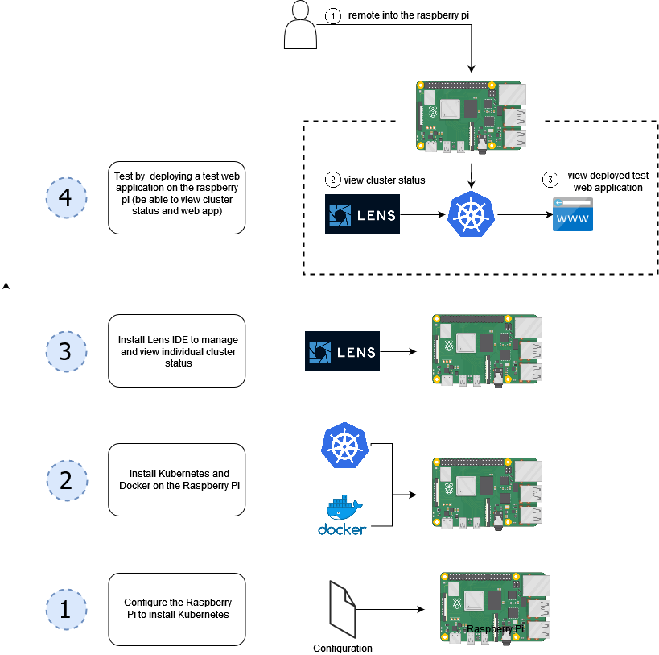
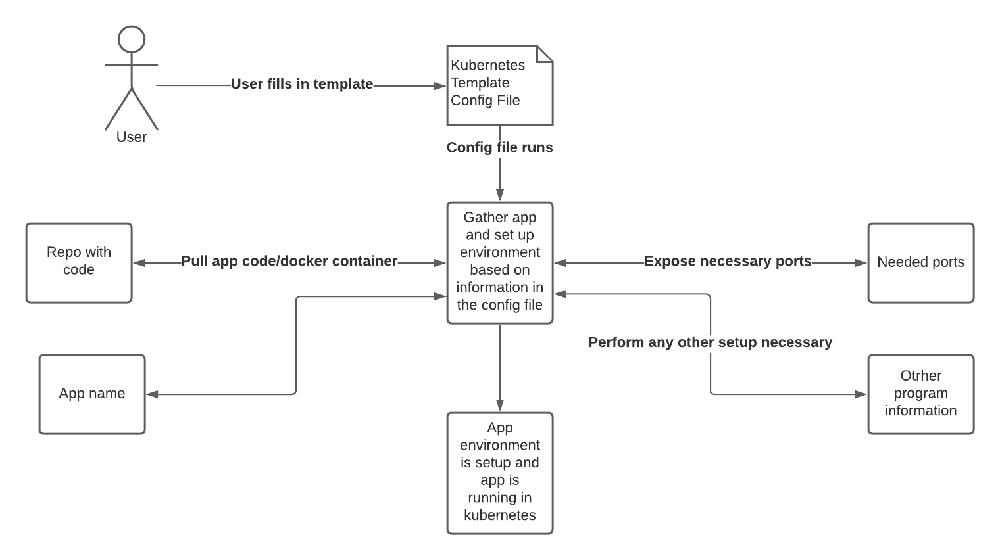
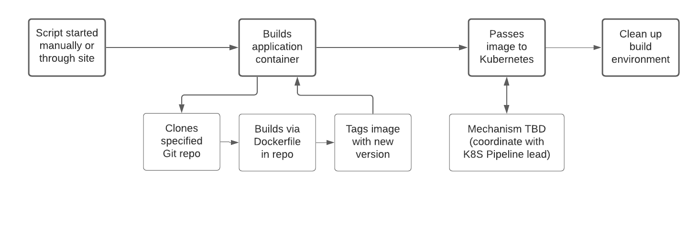
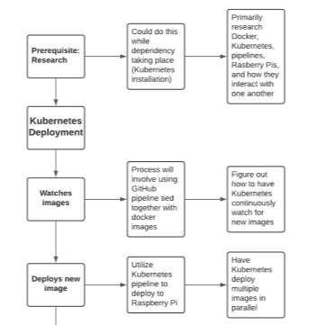
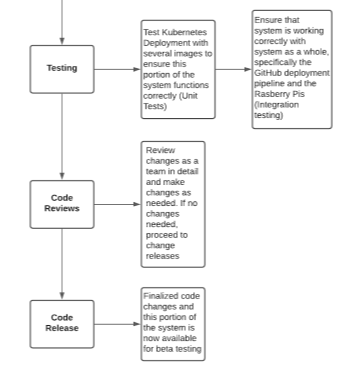
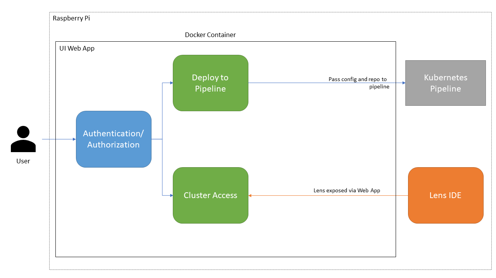

Fun With Kubernetes
K8S Cluster Deployment
Robert Detjens
October 28, 2021
Project Summary
- Kubernetes Cluster on Raspberry Pi
- Deployment pipeline for containerized applications
- Web API for project management

Goals
- Make it easy for developers to deploy containerized applications to a K8S cluster
- Operate at a lower operating cost compared to industry solutions
- Provide scalability, either up or down
- Intuitive and easy to use for end users
Deliverables
- Kubernetes deployed on Raspberry Pi devices
- Deployment pipeline running on a cluster of Raspberry Pi devices
- Able to deploy a user’s service to the Kubernetes cluster from a user-provided config file
- User must be able to access pipeline from local network
- Service hosted on Raspberry Pi’s must be available on the internet
Requirements
- Kubernetes Setup
- Project Config File
- Github Container Build Pipeline
- Kubernetes Deployment Pipeline
- Deployment UI Website
- Final Integration
- Beta Testing
Requirement Breakdown
1. Kubernetes Setup

1. Kubernetes Setup
- Install Kubernetes on the Raspberry Pi (1-2 days)
- Configure Kuberentes on the Raspberry Pi (1-2 days)
- Connect to the Raspberry Pi Admin tools with K8S Lens (3 Days)
- Test Kubernetes on the Raspberry Pi (3 days)
- Code reviews and release (4-5 Days)
2. Kubernetes CI/CD Config File Integration

2. Kubernetes CI/CD Config File Integration
- Research what settings are needed (2-3 days)
- Work with Deployment UI Website team to define template format (4-6 days)
- Create end-user documentation for config template (1 days)
- Code reviews and release (4-5 Days)
3. Github Container Pipeline

3. Github Container Pipeline
- Create build script to pull repo from user-provided repository (1 day)
- Modify build script to build container image (1-3 days)
- Coordinate with K8S Deployment team to define container handoff API (2-3 days)
- Modify build script to send built image to K8S onboarding (1-2 days)
- Modify script to ensure clean building environment (1-2 days)
- Code Reviews and release (4-5 Days)
4. Kubernetes Deployment Pipeline


4. Kubernetes Deployment Pipeline
- Watch the images in the deployment area (1-2 days)
- Deploy a new image in the deployment area (2-3 Days)
- Coordinate with Github Container Build team to define container handoff API (2-3 Days)
- Testing (2-3 Days)
- Code Reviews and release (4-5 Days)
5. User-facing Deployment UI Website

5. User-facing Deployment UI Website
- Create a clean and usable web UI (3-6 days)
- Containerize the web UI and self-host on the cluster (1 day)
- Create an interface to pass app and config to the pipeline for deployment (3-6 days)
- Expose admin tools, such as Lens IDE (2-7 days)
- Set up authentication (3-5 days)
- Code reviews and release (4-5 days)
6. Final Integration
7. Beta Testing
Tasks distribution
Phase 1: Mark - TM1 Phase 2: Jacob - TM2 Phase 3: Robert - TM3 Phase 4: Paul - TM4 Phase 5: Nathan - TM5
Component Interfaces
1. Kubernetes
2. Config Template
- coordinate with Phase 5
- site will take this data from user and generate template
- specifics will be added when needed
3. Github Build
- coordinate with Phase 4
- Docker builds image and stores internally
- needs to be passed to K8S somehow
4. K8S Onboarding
5. Management Site
- coordinate with Phase 2
- needs to expose required settings for user input
- generate config for Phase 3
- coordinate with Phase 1
- how to expose Lens UI to developers
Schedule
Fall term:
- Sprint 2: phase 1
- Sprint 3: phase 2 (1/2)
Winter term:
- Sprint 4: phase 2 (2/2), phase 3 (1/2), phase 4, phase 5 (1/2)
- Sprint 5: phase 3 (2/2), phase 5 (2/2)
- Sprint 6: Integration
Spring term:
- Sprint 7: Beta testing
Management
Sprint Goals
Sprint 2 (11/1 to 11/21)
Planned Deliverables:
- Installation & configuration of cluster
- Kubernetes
- K8S Lens
Dependencies:
- None
Sprint 3 (11/22 to 12/12)
Planned Deliverables:
- Configuration files for K8S can be generated from user options
- Lens is installed and running on the cluster
Dependencies:
- K8S is installed and working on the devices
Sprint 4 (1/3 to 1/23)
Planned Deliverables:
- Pipeline functional
- Builds image from GitHub repo
- Image then detected and launched by K8S
- UI hosted and accessible on cluster
- Site can pass app config to and trigger build pipeline
Dependencies:
- K8S is installed and working on the devices
- K8S config files can be generated from user options
Sprint 5 (1/24 to 2/13)
Planned Deliverables:
- Authentication required for pipeline UI to prevent unauthorized attempts to access the cluster
- Admin tools from Lens exposed by UI
Dependencies:
- K8S is installed and working on the devices
- Lens running on cluster
- UI running on cluster
Sprint 6 (2/14 to 3/6)
Planned Deliverables:
- Integration testing completed
Dependencies:
- All previous deliverables
Sprint 7 (3/28 to 4/17)
Planned Deliverables:
- Beta testing complete
Dependencies:
- Integration finished